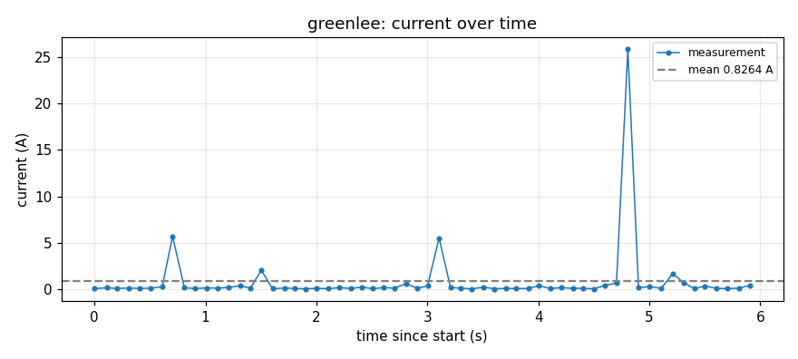
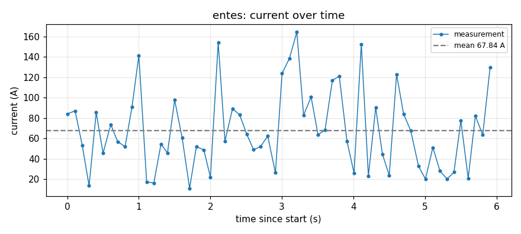
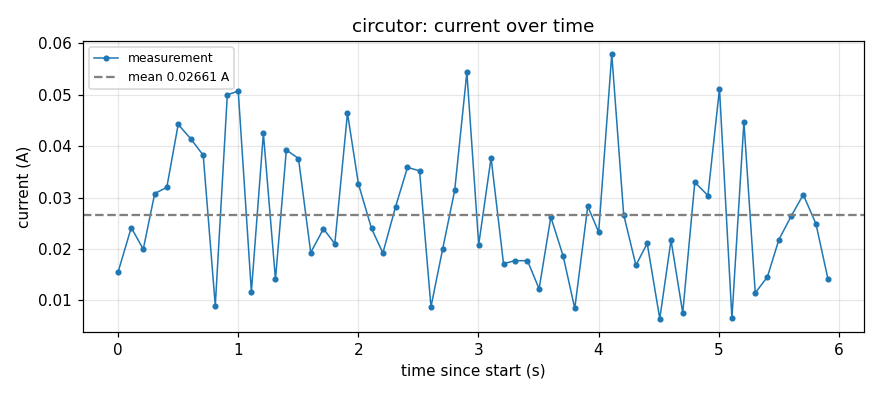
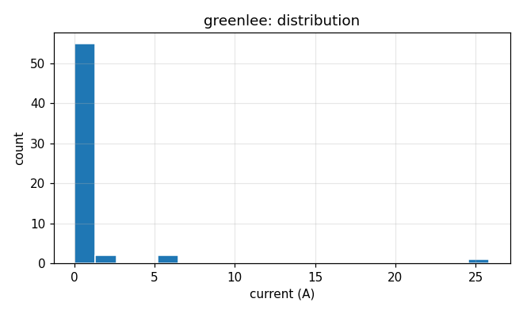
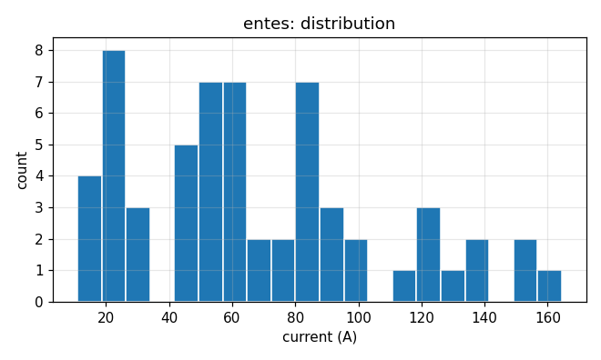
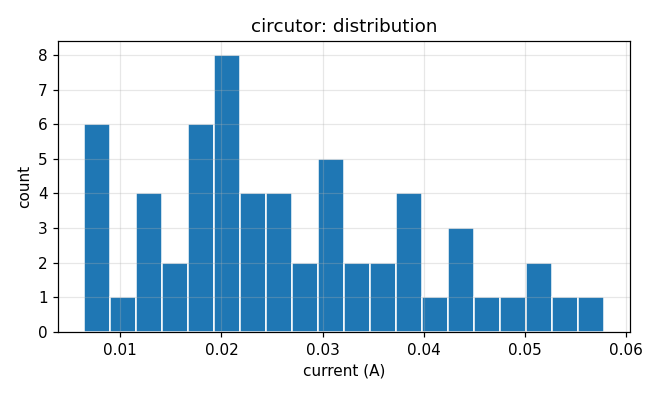
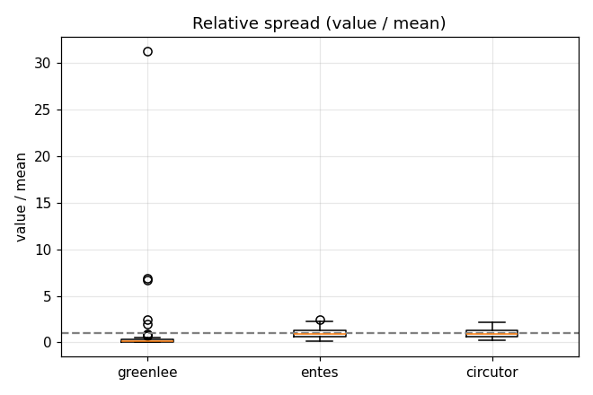

Status: completed · started 2026-11-23T10:27:32 ·
finished 2026-11-23T10:27:38
Sampling: 60 measurements @ 10 Hz
· host DV3147-MAC.local · Python 3.12.6
| ammeter | ok/total | err % | mean (A) | median | std | min | max | CV | consistency | achieved Hz | latency ms | z | conforms |
|---|---|---|---|---|---|---|---|---|---|---|---|---|---|
| greenlee | 60/60 | 0 | 0.8264 | 0.1097 | 3.442 | 0.02125 | 25.84 | 4.166 | variable | 9.983 | 2.872 | 1.83 | yes |
| entes | 60/60 | 0 | 67.84 | 61.36 | 39.41 | 10.94 | 164.5 | 0.5809 | moderate | 9.983 | 2.884 | -0.168 | yes |
| circutor | 60/60 | 0 | 0.02661 | 0.02406 | 0.01301 | 0.006463 | 0.05782 | 0.4888 | moderate | 9.983 | 2.78 | -1.86 | yes |
rank by availability, then conformance to expected mean, then coefficient of variation
| rank | ammeter | availability | CV | CV vs best | z | conforms |
|---|---|---|---|---|---|---|
| 1 | circutor | 100% | 0.4888 | 1 | -1.86 | yes |
| 2 | entes | 100% | 0.5809 | 1.19 | -0.168 | yes |
| 3 | greenlee | 100% | 4.166 | 8.52 | 1.83 | yes |
Most reliable: circutor






